용접기사 (2003-03-16 기출문제)
1과목: 기계제작법
1. 목형에서 코어(core)를 주형이 지지할 수 있게 하기 위하여 코어의 소요치수보다 길게 만들고 주형에는 지지좌(支持座)를 만드는 데 이것을 무엇이라 하는가?
- 코어 상자(core box)
- 코어 라운딩(core rounding)
- 코어 프린트(core print)
- 코어 서포트(core support)
(정답률: 25%)

2. 주물사의 구비조건이 아닌 것은?
- 통기성이 양호할 것
- 성형성이 양호할 것
- 열전도성이 양호할 것
- 내열성이 양호할 것
(정답률: 44%)
3. 주축중심선과 테이블의 상대 위치에 대한 정밀 측정장치를 가지고 있는 것은?
- 보통 보링 머신
- 지그 보링 머신
- 수직 보링 머신
- 심공 보링 머신
(정답률: 32%)
4. 공작기계에서 가공물을 고정할 때 바이스를 사용하는 기계가 아닌 것은?
- 세이퍼
- 슬롯터
- 선반
- 플레이너
(정답률: 38%)
5. 두께 2㎜, 최대 전단응력 45 kgf/㎜2인 재료에 24㎜의 구멍을 펀치작업으로 뚫을려면 가할 힘은 얼마나 되는가?
- 약4568 kgf
- 약5279 kgf
- 약6786 kgf
- 약7367 kgf
(정답률: 48%)
6. 길이 300mm의 사인바아로 29° 를 측정할려면 블록 게이지는 몇 mm 를 사용하면 되는가? (단, 사인바아와 측정면이 일치함)
- 138.79 mm
- 127.36 mm
- 186.25 mm
- 145.44 mm
(정답률: 45%)
7. 빌트 업에지(Built - up edge :구성인선)의 발생방지 대책으로 가장 옳은 것은?
- 절삭깊이, 이송 속도를 크게한다.
- 바이트 윗면 경사각을 크게하고 절삭속도를 높인다.
- 절삭 속도를 느리게 하고 절삭깊이 및 이송 속도를 크게하고 윤활성이 좋은 윤활유를 사용한다.
- 바이트의 윗면 경사각을 작게 한다.
(정답률: 48%)
8. 불활성 가스 텅스텐 아크용접 (inert gas tungsten arc welding)에 사용되는 텅스텐 봉은?
- 전극으로서의 역할만 하고 녹지 않는다.
- 전류밀도를 증가시키며 녹아서 용접부에 보충된다.
- 전극의 역할도 하고,녹아서 보충재의 역할도 한다.
- 모재 표면에 융착하여 산화막을 형성하는 역할을 한다.
(정답률: 50%)
9. 주철 주물은 응고하는 도중에 응고속도의 차로 내부응력이 남는다. 이것을 제거하는 방법으로 열처리한다. 열처리(어닐링)온도로서 가장 적당한 것은?
- 약 800℃ 이상
- 약 1000℃ 이상
- 약 600℃ 이상
- 약 400℃ 이상
(정답률: 45%)
10. 주물사의 강도 시험 중 틀린 것은?
- 굽힘 강도 시험
- 인장 강도 시험
- 전단 강도 시험
- 충격 강도 시험
(정답률: 24%)
11. 렌치(wrench), 스패너(spanner)등 소공구를 단조할 때 다음 중 어느 것이 가장 적합한가?
- 자유단조(free forging)
- 로터리 스웨이징(rotary swaging)
- 프레스 가공(press working)
- 형 단조(die forging)
(정답률: 43%)
12. 진원의 수정, 진직도(眞直度)의 수정 및 평면도 (平面圖)의 수정을 모두 할 수 있는 것은?
- 연삭(grinding)
- 호우닝(honing)
- 브로우칭(broaching)
- 래핑(lapping)
(정답률: 19%)
13. 선반에서 테이퍼를 깎는 방법이 아닌 것은?
- 복식 공구대를 이용함
- 테이퍼 절삭장치를 이용함
- 심압대 센터를 편위시킴
- 백 기어를 사용함
(정답률: 50%)
14. CNC프로그램의 주요 기능 중 주축기능을 나타내는 것은?
- F
- S
- T
- M
(정답률: 29%)
15. 방전가공(放電加工)에서 가장 기본적인 회로(回路)는
- RC 회로
- 트랜지스터 회로
- 임펄스 발전기회로
- 고전압법 회로
(정답률: 39%)
16. 대형 공작기계에서 로스트모션(lost motion)을 적게 할수 없고 낮은 게인(gain)으로 높은 정밀도를 얻을 수 있는 수치제어 방식은 어느 것인가?
- 개방 루프방식(open loop)
- 반 폐쇄 루프방식(semi-closed loop)
- 폐쇄 루프방식(closed loop)
- 복합 루프방식(hybrid loop)
(정답률: 25%)
17. 내연기관의 실린더 블록을, 다량(多量)으로 주조하는데 가장 적당한 방법은?
- 쉘 주형법(shell molding process)
- 인베스트먼트 주조법(investment casting)
- 쇼 주조법(show process)
- 저압 주조법(low pressure casting)
(정답률: 37%)
18. 소요형상 주물의 첫 단계인 모형(pattern)을 만들 때, 고려할 사항이 아닌 것은?
- 목형여유(pattern allowance)
- 수축여유(shrinkage allowance)
- 팽창여유(expansion allowance)
- 기계가공여유(machining allowance)
(정답률: 38%)
19. 난삭재라 일컫는 티타늄(titanium)강을 절삭시 공구면에 절삭온도가 극심하게 상승한다. 그 이유는?
- 열전도도가 높은 재료이기 때문에
- 열전도도가 낮은 재료이기 때문에
- 마찰계수가 크게 나타나기 때문에
- 절삭력이 크게 나타나기 때문에
(정답률: 20%)
20. 지름 60mm 의 봉재를 절삭속도 115m/min 으로 절삭 하려면 알맞는 회전수는?
- 40rpm
- 610rpm
- 1000rpm
- 2700rpm
(정답률: 25%)
2과목: 재료역학
21. 그림에서 점 C 단면에 작용하는 내부 합모멘트는 몇 Nㆍm 인가?
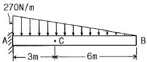
- 270(시계 방향)
- 810(시계 방향)
- 540(반시계 방향)
- 1080(반시계 방향)
(정답률: 30%)
22. 그림과 같이 외팔보가 자유단에서 시계방향의 우력 M 을 받는 경우, 자유단의 처짐 δ는?
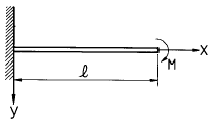
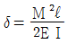
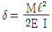
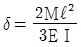
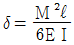
Ⅰ
(정답률: 24%)
23. 그림과 같이 1000N 의 힘이 브래킷의 A에 작용하고 있다. 이 힘의 점 B에 대한 모멘트는 몇 Nㆍm 인가?
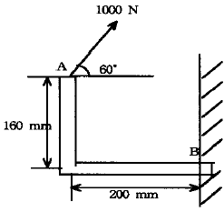
- 160
- 200
- 238.6
- 253.2
(정답률: 18%)
24. 축에 두께가 얇은 링을 가열 끼워맞춤(shrinkage fit)하였을 때 축 및 링에 각각 어떤 응력이 생기는가?
- 축에 압축응력, 링에 인장응력
- 축에 인장응력, 링에 압축응력
- 축과 링 모두에 인장응력
- 축과 링 모두에 압축응력
(정답률: 25%)
25. σx = 60MPa, σy = 50MPa, τxy = 30MPa일 때 주응력 σ1과 σ2 는 각각 몇 MPa 인가?
- σ1 ≒ 60, σ2 ≒ 50
- σ1 ≒ 80, σ2 ≒ 90
- σ1 ≒ 85.4, σ2 ≒ 24.6
- σ1 ≒ 88.0, σ2 ≒ 32.6
(정답률: 39%)
26. 그림과 같은 단순지지보에 하중 400 N이 작용할 때 C단면의 아래쪽 섬유에서의 굽힘응력은 몇 MPa 인가?
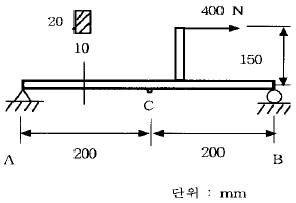
- 4.5 (압축)
- 45 (압축)
- 4.5 (인장)
- 45 (인장)
(정답률: 13%)
27. 그림에서 빗금친 부분의 도심을 구한 것은? (곡선의 방정식은 y3 = 2x이고, x, y는 cm 단위이다.)
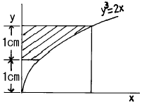
- x = 1.210, y = 1.653
- x = 1.284, y = 1.724
- x = 1.3⑤, y = 1.983
- x = 1.423, y = 1.724
(정답률: 17%)
28. 단면적이 10cm2인 봉을 30℃에서 수직으로 매달고 10℃로 냉각하였을 때 원래의 길이를 유지하려면 봉의 하단에 몇 kN 의 하중을 가하면 되는가? (단, 탄성계수 E = 200 GPa, 선팽창계수 α = 1.2x10-5 )
- 35
- 17
- 26
- 48
(정답률: 13%)
29. 단면의 형상이 일정한 재료에 노치(notch)부분을 만들어 인장할 때 응력의 분포 상태는 어느 것이 옳은가?
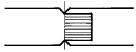
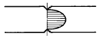
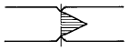
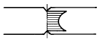
(정답률: 36%)
30. 수직 변형률 εx = 200x10-6, εy = 50x10-6, 전단변형률 γxy = -120x10-6 인 평면변형률 상태의 주변형률은?
- 267x10-6, 16x10-6
- -267x10-6, 16x10-6
- -221x10-6, 29x10-6
- 221x10-6, 29x10-6
(정답률: 22%)
31. 바깥지름이 46mm인 속이 빈축이 120kW의 동력을 전달하는 데 이 때의 각속도는 40 rev/s 이다. 이 축의 허용비틀림 응력이 τa = 80 MPa 일 때, 최대 안지름은 몇 mm 인가?
- 21.8
- 41.8
- 36.8
- 84.8
(정답률: 18%)
32. 원형 단면과 정사각형 단면의 기둥이 동일한 세장비를 가질 때 양 기둥의 길이비는? (단, 각 경우에서 지름과 한변의 길이는 20cm 이다.)
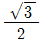
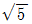
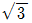
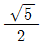
(정답률: 23%)
33. 반지름 r인 원형축의 양단에 비틀림 모멘트 Mt가 작용될 경우 축의 양단 사이의 최대 비틀림각은? (단, 축의 길이는 L이고, 전단 탄성계수는 G이다.)
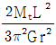
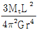
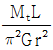
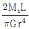
(정답률: 6%)
34. 그림과 같은 구조물에 수직하중이 100 N이 작용하고 있을 때, AC 및 BC 강선에 발생하는 힘은 몇 N 인가?
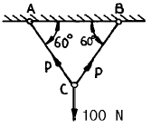
- 50
- 100
- 80
- 57.7
(정답률: 12%)
35. 그림과 같은 단면을 가진 단순보 AB에 하중 P가 작용할때 A단에서 0.2m 떨어진 곳의 굽힘응력은 몇 MPa 인가?
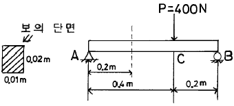
- 20
- 30
- 40
- 50
(정답률: 13%)
36. 그림과 같은 원형단면을 가진 연강 봉재가 200 kN의 인장하중을 받아 늘어났을 때, 늘어난 전체길이는 몇 cm인가? (단, 탄성계수 E = 200 GPa 이다.)
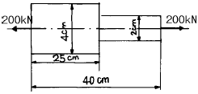
- 40.068
- 40.⑤9
- 40.040
- 40.031
(정답률: 13%)
37. 어떤 재료의 탄성계수 E 와 전단탄성계수 G를 알아보았더니 E = 210GPa, G = 83GPa를 얻었다. 이 재료의 포아송비는?
- 0.265
- 0.115
- 1.0
- 0.435
(정답률: 15%)
38. 연강 1㎝3의 무게는 0.0785N이다. 길이 15m의 둥근봉을 매달 때 상단고정부에 발생하는 인장응력은 몇 kPa인가?
- 0.118
- 1177.5
- 117.8
- 11890
(정답률: 8%)
39. 평면응력의 경우 훅의 법칙(Hook's law)을 바르게 나타낸 것은?(단, σx : 수직응력, εx, εy : 변형률, ν :포아송 비, E : 탄성계수 이다.)
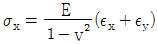
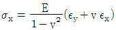
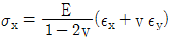
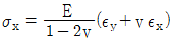
(정답률: 15%)
40. 그림과 같이 일단을 고정한 L형보에 표시된 하중이 작용할 때 고정단에서의 굽힘모멘트는?
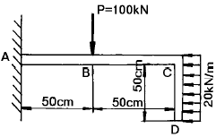
- 300 kNㆍm
- 175 kNㆍm
- 1⑤ kNㆍm
- 52.5 kNㆍm
(정답률: 19%)
3과목: 용접야금
41. 용접결함의 일종인 은점은 용착금속의 인장 또는 굴곡 파단면에 생긴다. 이 결합부의 발생원인으로 옳은 것은?
- 유황 취화현상
- 수소 취화현상
- 인 취화현상
- 산소 취화현상
(정답률: 65%)
42. 용접금속이 응고할 때 용융금속 중의 산소와 결합하여 산소 제거 작용을 하는 탈산제는?
- 금속망간-형석분말
- 티탄철-이산화망간분말
- 규소철-규산칼리분말
- 망간철-알루미늄분말
(정답률: 54%)
43. 냉간 가공한 강을 저온으로 뜨임하면, 경화 즉, 변형 시효를 일으키는 경우가 있는데, 이 변형 시효에는 다음 중 어느 원소의 영향을 크게 받는가?
- 질소
- 산소
- 수소
- 알루미늄
(정답률: 27%)
44. 금속의 열간가공과 냉간가공을 구분하는 기준점은?
- 자기변태온도
- 뜨임온도
- 재결정온도
- 풀림온도
(정답률: 45%)
45. 용접비드 부근이 가장 부식되기 쉬운 원인은?
- 잔류응력이 많기 때문에
- 탄소함량이 많기 때문에
- 소둔효과가 생기기 때문에
- 조직에 변화가 일어나기 때문에
(정답률: 43%)
46. 알미늄 용접시 용입을 조절하기 위한 방법 중 옳지 않은 방법은?
- 용접전류의 세기를 조절함
- 전극봉의 극성을 변화시킴
- 보호가스에 O2를 혼합하여 용접함
- 보호가스에 He가스량을 조절함
(정답률: 53%)
47. 주철의 용접이 곤란한 이유에 속하지 않은 것은?
- 취성이 있어 부스러지기 쉽기 때문에 용접부 또는 다른 부분에 균열이 생기기 쉽기 때문이다.
- 일산화탄소 가스가 발생되어 용착금속에 기공이 생기기 쉽기 때문이다.
- 주철을 용융상태에서 급냉하면 백선화가 되기 때문이다.
- 모재 전체를 먼저 500∼600℃ 정도 고온으로 예열한 후 용접했기 때문이다.
(정답률: 60%)
48. 저온 취성(低溫脆性)을 개선하는 데 가장 크게 기여하는 원소는?
- 탄소
- 망간
- 니켈
- 유황
(정답률: 35%)
49. 알루미늄 합금의 열처리법에 해당되지 않는 것은?
- 마퀜칭
- 용체화 처리
- 인공 시효처리
- 풀림
(정답률: 48%)
50. 상온에서 강자성체이며 연성은 크고 인장강도는 작으며 파면이 백색을 띠고 있는 강의 표준조직은?
- 페라이트(ferrite)
- 펄라이트(pearlite)
- 시멘타이트(cementite)
- 오스테나이트(austenite)
(정답률: 48%)
51. 철-탄화철계인 공정조직으로 4.3%C 인 공정성분의 액체가 1130℃에서 응고하여 생기는 조직으로 세립의 오스테나이트와 시멘타이트가 혼합한 조직은?
- 펄라이트(Pearlite)
- 트루스타이트(Troostite)
- 레데브라이트(Ledeburite)
- 페라이트(Ferrite)
(정답률: 45%)
52. 퍼커션 용접(percussion welding)은 다음 중 어느 것에 해당하는가?
- 아크 용접
- 가스 용접
- 전기 저항용접
- 전자 빔용접
(정답률: 59%)
53. 금속결정의 전위 형태가 아닌 것은?
- 인상전위
- 나선전위
- 굽힘전위
- 혼합전위
(정답률: 34%)
54. 다음 중 면심입방 격자로만 된 것은?
- Al, Ni, Cu
- Pt, Pb, V
- Ag, Au, W
- Mg, Zn, Cd
(정답률: 67%)
55. 용접 루트 크랙을 설명하는 것이 아닌 것은?
- 맞대기나 필렛용접의 200℃ 이하에서 생기는 저온균열이다.
- 용착금속이 냉각되어 수축할 때 일어난다.
- 용접 비드가 클 수록 일어나기 쉽다.
- 용착금속 주위에 노치가 있으면 생기기 쉽다.
(정답률: 50%)
56. 가스 용접에서 용제를 사용하지 않아도 되는 것은?
- 알루미늄
- 구리
- 주철
- 연강
(정답률: 60%)
57. 용접화학반응의 설명으로 맞는 것은?
- 용접금속 중의 가스성분이 일반의 강재에 비하여 많은 것은 해리 작용이 없기 때문이다.
- 용융슬래그를 구성하는 산화물은 염기성, 중성, 산성의 3 종류이다.
- 용접 중의 질소 용해량은 온도에 반비례하여 증가한다.
- 용접 중의 수소 용해량은 온도에 반비례하여 증가한다.
(정답률: 40%)
58. 항온 변태 곡선과 관계 없는 것은?
- S 곡선
- CCT
- nose
- bainite
(정답률: 50%)
59. 용접 열영향을 받아도 경화하지 않으나 융접부근에서 가열된 영역은 현저하게 결정이 조대화하고 이때문에 연성, 인성이 떨어지는 스테인레스 강은?
- 페라이트계 스테인레스강
- 오스테나이트계 스테인레스강
- 마텐사이트계 스테인레스강
- 펄라이트계 스테인레스강
(정답률: 29%)
60. 금속재료가 연성파괴에서 취성파괴하는 온도범위를 무엇이라 하는가?
- 임계온도
- 천이온도
- 층간온도
- 변태온도
(정답률: 64%)
4과목: 용접구조설계
61. 용접부를 해머로 두드리는 피닝 작업의 목적은?
- 불순물 제거
- 용접부의 응력완화
- 변형교정
- 용접부의 결함부분 제거
(정답률: 38%)
62. 노치의 최대 응력을 노치의 공칭 응력으로 나눈 것은?
- 응력 집중계수
- 노치 계수
- 피로 한도비
- 노치 감도계수
(정답률: 37%)
63. 그림과 같이 굽힘과 전단을 받는 불용착부가 있는 T형의 이음에서 거리 L = 120 mm, 하중 P = 5000㎏f이 작용되고 있을 때 용접부에 생기는 최대굽힘응력은 몇 ㎏f/㎜2인가? ( 단, 용접길이 ℓ =240 mm, 판두께 t=36 mm, 홈깊이 h=12mm 이다.)
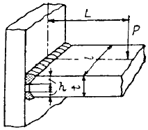
- 1.2
- 1201
- 12
- 120
(정답률: 34%)
64. 용접설계상 주의사항중 알맞지 않은 것은?
- 용접하기에 알맞는 이음 형식을 택해야 한다.
- 용접선은 가급적 짧게 하여야 한다.
- 용접한 부분을 한 곳에 모이게 한다.
- 용접하기 쉬운 자세를 한다.
(정답률: 56%)
65. 맞대기 용접에서 용접금속 및 모재의 수축에 대하여 용접 전(前)에 반대방향으로 굽혀 놓고 작업하는 용접 교정 방법은?
- 억제법
- 도열법
- 피닝법
- 역 변형법
(정답률: 56%)
66. 다음 그림은 T형 이음인데 인장력과 굽힘작용을 받을 경우 가장 신뢰도가 높은 이음은?
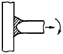
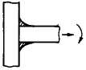
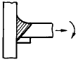
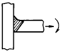
(정답률: 43%)
67. 다음은 용접시의 판상의 온도 분포에 대한 설명이다. 옳지 못한 것은?
- 용접열원 부근의 온도는 대단히 높다.
- 열원에서 멀어질수록 온도는 낮아지고 있다.
- 열원후방 부근에서는 온도구배가 완만하다.
- 열원전방 부근에서는 온도구배가 완만하다.
(정답률: 36%)
68. 그림과 같은 용접부의 목두께는?
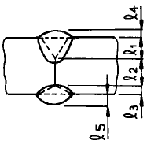
- ℓ1 + ℓ2 + ℓ3
- ℓ1 + ℓ2
- ℓ1 + ℓ3
- ℓ1 + ℓ2 + ℓ3 + ℓ4 + ℓ5
(정답률: 40%)
69. 용접부에서 압축응력은 어디에서 일어나는가?
- 용접 비드의 끝부분
- 용접 비드의 중앙부분
- 열을 가한 부분
- 열을 가한 부분을 둘러싼 주위
(정답률: 32%)
70. 열적 구속도 시험이라고도 하며 열의 흐름을 두 방향이나 세 방향으로 하여 비드에 발생하는 균열을 검사하는 시험법은?
- CTS 균열시험
- Murex 고온균열시험
- Fisco 균열시험
- Lehigh 균열시험
(정답률: 43%)
71. 인장압축의 반복하중 30ton이 용접선에 직각방향으로 작용하고,폭이 500㎜인 2개의 강판을 맞대기 용접할 때, 그 강판의 두께는 얼마인가? (단,허용응력 σa = 800kgf/㎝2이다.)
- 3.5㎜
- 5.5㎜
- 7.5㎜
- 9.5㎜
(정답률: 35%)
72. 용접시공시 라멜라 테어의 발생과 가장 관계가 깊은 것은 무엇인가?
- 모재 판두께 방향의 인장강도
- 모재 판두께 방향의 단면 수축률
- 모재의 충격치
- 용접금속의 인장강도
(정답률: 29%)
73. 용접후 변형을 교정하는 방법으로 적당하지 않은 것은?
- 얇은 판에 대한 점 수축법
- 피닝(peening)법
- 형재에 대한 직선 수축법
- 역변형후 억압법
(정답률: 34%)
74. 다음은 용접부의 냉각속도에 대한 설명이다. 옳지 못한 것은?
- 후판이 박판보다 냉각속도가 빠르다.
- 맞대기 이음보다 T형이음 용접의 경우가 냉각속도가 빠르다.
- 맞대기 이음보다 T형이음 용접의 경우가 냉각속도가 늦다.
- 두꺼운 판을 용접할 때 열은 여러 방향으로 방열되어 냉각속도가 빠르다.
(정답률: 56%)
75. 다음 그림과 같은 플러그 용접의 실제 모양을 도시한 것이다. 바르게 기호로 표시한 것은?
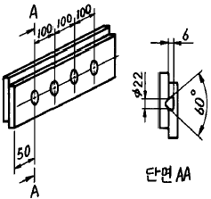
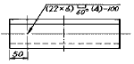
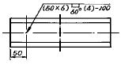
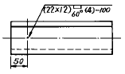
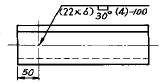
(정답률: 36%)
76. 용접시편의 시험에 있어 시편표면에 나타난 결함(균열등)의 길이를 측정하는 시험법은?
- 압력시험법
- 굴곡시험법
- 피로시험법
- 초음파시험법
(정답률: 24%)
77. 그림에서와 같이 웨브와 플랜지의 단면적이 모두 같으나 웨브의 배치를 다르게 했을 때 비틀림 하중에 가장 강한 구조는?
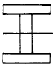
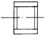
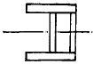
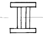
(정답률: 15%)
78. 다음 금속의 용접 중 열전도율이 가장 큰 것은?
- 연강
- 18 - 8 스텐레스강
- 알루미늄
- 구리
(정답률: 48%)
79. 금속의 용접에서 열확산도가 다음중 가장 큰 것은?
- W
- Cu
- Fe
- Mo
(정답률: 56%)
80. 다음은 용접부의 열유동에 대한 설명이다. 옳지 않은 것은?
- 용접부의 재질 변화를 알기 위하여 최고 도달온도를 알아야 한다.
- 재질변화를 알기 위하여 냉각 속도도 알 필요가 있다.
- 용접부의 재질변화에 예열 온도가 영향을 미친다.
- 용접입열의 크기는 재질변화에 영향이 없다.
(정답률: 50%)
5과목: 용접일반 및 안전관리
81. 브래징(BRAZING) 용접은 저온 용가재를 사용하여 모재를 녹이지 않고 용가재만 녹여 용접을 이행하는 방식인데 섭씨 몇도 이상에서 용접을 이행하는 방법인가?
- 350℃
- 400℃
- 450℃
- 420℃
(정답률: 22%)
82. 용접 화상을 입었을 때 응급조치 중 틀린 것은?
- 상처에 로션을 써서는 안된다.
- 화상위의 탄옷을 가능한 제거하고 치료한다.
- 물집을 터뜨린다.
- 쇼크방지 치료법을 이용한다.
(정답률: 50%)
83. 용접시 전안염(電眼炎)을 일으키는 요인은?
- 중독성 가스
- 아크 광선
- 스패터링
- 슬랙의 비산(飛散)
(정답률: 48%)
84. 용접성시험에 해당되는 것은?
- 피로시험
- 부식시험
- 파면시험
- 노치취성시험
(정답률: 28%)
85. 피복 아크 용접봉 E4340은 다음중 어떤 계통인가?
- 특수계
- 라임티탄계
- 저수소계
- 철분산화철계
(정답률: 36%)
86. 엘렉트로 슬래그 용접에서 전극와이어와 모재사이 전압 E(V),용접전류 I(A)라면 전기저항발생열 Q(㎈ /sec)는?
- Q = 1.19EI2
- Q = 15EI
- Q = 0.24EI
- Q = 130EI2
(정답률: 34%)
87. 어느 용접기의 무부하 전압 80V, 아크 전압 30V, 아크 전류 300A, 내부손실 4㎾라 하면 이 용접기의 역율은?
- 약 54.2%
- 약 69.3%
- 약 72.4%
- 약 99.5%
(정답률: 27%)
88. 용기내의 액화탄산 25㎏은 1분단 20리터씩 방출하여 용접하면 약 몇 시간이나 사용하겠는가?
- 10시간 30분
- 12시간
- 14시간 20분
- 15시간 15분
(정답률: 22%)
89. 용접봉 표시가 알맞게 된 것은?
- E4316 : 고산화티탄계
- E4301 : 저수소계
- E4303 : 라임티탄계
- E4327 : 철분 산화티탄계
(정답률: 25%)
90. 저항 용접중 맞대기로 용접하는 용접법은?
- 플래시 용접, 퍼커션 용접
- 업셋 용접, 시임 용접
- 점 용접, 퍼커션 용접
- 프로젝션 용접, 점 용접
(정답률: 22%)
91. 정격 2차전류 300A,정격사용율 40%의 아크 용접기로 200A의 용접전류를 사용하여 용접하는 경우 용접기 가동 시간이 1시간일때 아크를 발생시킬수 있는 시간은 얼마인가?
- 71분
- 62분
- 58분
- 54분
(정답률: 27%)
92. 교류용접기의 특징이 아닌 것은?
- 전류의 방향이 바뀌므로 아크가 불안정하다.
- 취급하기 쉽고 고장이 적다.
- 소음이 적다.
- 무부하 전압이 직류보다 낮다.
(정답률: 24%)
93. 용접지그(Jig)의 역할 중 틀린것은?
- 작업을 용이하게 한다.
- 작품을 고정하기 위해서이다.
- 작품치수를 정확하게 한다.
- 용접열응력을 강화한다.
(정답률: 38%)
94. 용접봉 중 내균열성이 가장 큰 것은?
- 티탄계
- 고산화 철계
- 일미나이트계
- 저수소계
(정답률: 50%)
95. 용융 용접시공을 할 때, 언더 필(under fill)의 옳은 설명은?
- 용접금속과 모재사이의 용해 경계상의 모재가 용해되어 없어진 것
- 용접부의 가장자리에서 모재를 용해하지 않고 단지 모재를 덮는 것
- 용가재금속은 용융되었으나 모재가 용융되지 않은 것
- 용접부의 윗면이나 아래면에서 모재의 표면보다 낮게 들어간 것
(정답률: 34%)
96. 아크 용접에 속하는 것은?
- 단접법
- 테르밋 용접
- 업셋 용접
- 원자수소 용접
(정답률: 15%)
97. 양호한 절단면을 얻기위한 조건 중 틀린 것은
- 드래그가 가능한 클 것
- 절단면이 충분히 평활할 것
- 슬래그의 박리성이 양호할 것
- 절단표면의 각이 예리할 것
(정답률: 44%)
98. 용접기에서 멀리 떨어져서 작업을 수행할 때 전류의 원격 조정(Remote Control)이 가능한 용접기는?
- 가동철심형
- 탭전환형
- 가동코일형
- 가포화리액터형
(정답률: 30%)
99. 아크전류 150[A],아크전압 25[V]으로, 용접 단위길이당 발생되는 전기적 에너지를 12500 [Joule/cm]로 하고자 할경우 이 용접기의 용접속도는 몇 [cm/min]가 좋은가
- 8
- 12
- 18
- 22
(정답률: 37%)
100. 아크용접이나 절단에 쓰이는 차광유리 규격 중 100A이상 300A 미만의 용접작업을 할 때 다음 중 적당한 것은?
- 3∼5번
- 6∼8번
- 10∼12번
- 14∼16번
(정답률: 50%)